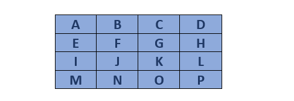
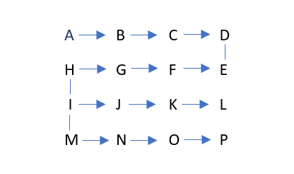
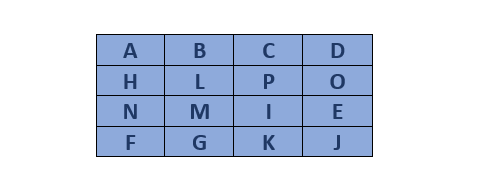

7. Diffie Hellman
Transposisi Route merupakan metode yang dilakukan dengan cara pesan disusun dalam grid (biasanya persegi atau persegi panjang), dan huruf-huruf pesan ditempatkan di dalam sel-sel grid sesuai dengan suatu pola atau rute tertentu. Setelah pesan disusun dalam grid, pesan diambil dengan mengikuti pola atau rute yang telah ditentukan, seperti zigzag, spiral, atau pola lainnya.
Salah satu contoh teknik transposisi terkenal adalah Union Route yang dipakai oleh Tentara Union selama Perang Saudara Amerika. Dengan cara pesan disusun dalam grid, lalu diambil kembali dengan mengikuti pola atau rute tertentu. Ini memberikan tingkat keamanan tambahan dalam komunikasi militer.
Transposisi route memiliki banyak variasi pembacaan teks yang dapat digunakan untuk mengambil kembali pesan dari grid yang telah disusun. Beberapa variasi algoritma pembacaan yang umum digunakan meliputi:
- Spiral (Spiral Route)
- Pesan diambil kembali dengan mengikuti pola spiral dari luar ke dalam atau sebaliknya.
- Mulai dari titik awal di salah satu sudut grid dan bergerak ke dalam dengan mengikuti pola spiral, mengambil setiap huruf pada gilirannya.
- Zigzag (Zigzag Route)
- Pesan diambil kembali dengan mengikuti pola zigzag di sepanjang baris atau kolom grid.
- Mulai dari titik awal, huruf-huruf pesan diambil secara bergantian dari baris ke baris atau dari kolom ke kolom, membentuk pola zigzag.
- Ular Tangga (Staircase Route)
- Pesan diambil kembali dengan mengikuti pola ular tangga yang naik atau turun.
- Mulai dari titik awal, huruf-huruf pesan diambil dengan bergerak secara diagonal naik atau turun, membentuk pola seperti ular tangga.
Analogi Transposisi Route
Mari kita gunakan analogi kelas dengan siswa yang duduk di kursi dalam bentuk grid untuk menjelaskan algoritma transposisi route menggunakan pola spiral.
Bayangkan kamu adalah guru yang ingin mengatur ulang tempat duduk siswa sesuai pola spiral. Anda mulai dengan siswa pertama di sudut kiri atas, lalu bergerak ke kanan hingga akhir baris, turun ke baris berikutnya di sebelah kanan, kemudian bergerak ke kiri, dan seterusnya, sampai Anda kembali ke tengah grid. Berikut langkahnya :
Susunan awal :

Pola spiral Sekarang kita akan membaca huruf-huruf dalam pola spiral, dimulai dari sudut kiri atas dan bergerak searah jarum jam.
Baca sesuai pola spiral Kita mulai dari A dan mengikuti pola spiral : 
Jika kita menulis urutan bacaan tersebut, kita mendapatkan : A B C D H L P O N M I E F G K JSekarang kita menulis ulang huruf-huruf tersebut sesuai urutan bacaan spiral : 
Implementasi Pada Python
Masukkan Plaintext
CONTOH : TENTUKAN PRIORITAS ANDA SEBAB KITA TIDAK DAPAT MENGERJAKAN SEMUANYA XplainText = input("Plaintext : ")Masukkan Kunci
CONTOH KEY : 5routeKey = int(input("Kunci: "))Menghapus Spasi
cleanPlainTeks = plainTeks.replace(" ", "")
print(cleanPlainTeks)Proses Enkripsi
- Menyusun teks yang sudah dibersihkan ke dalam sebuah matriks dengan kolom sebagai jumlah kolom atau lebar matriks
kolom = routeKey
matrix = []
panjang = len(cleanPlainTeks)
temp = panjang/kolom
bulat = round(temp)
if temp - bulat == 0:
jml_baris = bulat
else:
if temp - bulat < 0:
jml_baris = bulat
else:
jml_baris = bulat + 1
print(jml_baris)For More Detail :
kolom = routeKey: Menetapkan jumlah kolom pada matriks dengan nilai routeKeymatrix = []: Menginisialisasi sebuah list kosong yang akan digunakan untuk menyimpan elemen-elemen matrikspanjang = len(cleanPlainTeks): Menghitung panjang teks yang sudah dibersihkantemp = panjang/kolom: Menghitung berapa banyak baris yang diperlukan dengan membagi panjang teks dengan jumlah kolom dan menyimpan hasilnya dalam variabel tempbulat = round(temp): Membulatkan hasil pembagian temp ke angka terdekat dan menyimpannya ke dalam variabel bulattemp - bulat == 0: hasil pembagian tepat bulat, makajml_barisdiambil daribulattemp - bulat < 0: hasil pembagian kurang dari bulat (mungkin karena temp lebih kecil dari bulat), dan juga mengambiljml_barisdaribulatjml_baris = bulat + 1: Jika kondisi sebelumnya tidak terpenuhi, maka perlu satu baris tambahan
- Membuat sebuah matriks (matrix) yang berisi teks yang sudah dibersihkan (cleanPlainTeks) menggunakan nilai jml_baris dan kolom yang telah dihitung sebelumnya
for i in range(jml_baris):
row = []
for j in range(kolom):
if i * kolom + j < len(cleanPlainTeks):
elemen = cleanPlainTeks[i * kolom + j]
else:
elemen = " "
row.append(elemen)
matrix.append(row)For More Detail :
for i in range(jml_baris): Loop ini mengiterasi dari 0 hingga jml_baris - 1, yang berarti setiap iterasi mewakili satu baris dalam matriksrow = []: Membuat list kosong row yang akan menyimpan elemen-elemen untuk satu baris matriksfor j in range(kolom): Loop ini mengiterasi dari 0 hingga kolom - 1, yang berarti setiap iterasi mewakili satu kolom dalam matriksif i * kolom + j < len(cleanPlainTeks): Memastikan bahwa tidak melebihi panjang dari teks yang telah dibersihkan pada saat mengakses elemencleanPlainTeksuntuk dimasukkan ke dalam matrixelemen = x[i * kolom + j]: Jika ya, Mengambil elemen dari teks x pada posisi i * kolom + jelemen = " ": Jika tidak, Mengisi elemen dengan spasi kosong jika indeks berada di luar panjang teks x -row.append(elemen): Menambahkan elemen yang telah ditentukan (baik dari x atau spasi kosong) ke list rowmatrix.append(row): Menambahkan list row yang berisi elemen-elemen satu baris ke dalam list matrix
- Mencetak matrix
print("Matriks yang Anda buat:")
for row in matrix:
print(row)- Menghasilkan matriks transpose dari matrix yang telah dibuat
transposed_matrix = [[row[i] for row in matrix] for i in range(len(matrix[0]))]
for row in transposed_matrix:
print(row)For More Detail :
row[i] for row in matrix: Menghasilkan list elemen ke-i dari setiap baris dalam matrixfor i in range(len(matrix[0]))]: Mengiterasi setiap indeks kolom dari matrix dan membentuk baris baru dari elemen-elemen tersebutfor row in transposed_matrix: Loop ini mengiterasi melalui setiap baris dalamtransposed_matrixprint(row): Mencetak matriks transpose dari matrix
- String kosong yang akan digunakan untuk menyimpan teks yang terenkripsi
encrypted_text = ""- Menandai batas awal dan akhir dari baris dan kolom pada matriks transpose
start_row, end_row = len(transposed_matrix) - 1, 0
start_col, end_col = len(transposed_matrix[0]) - 1, 0- Mengambil baris dari kanan ke kiri
while start_row >= end_row and start_col >= end_col:
for i in range(start_col, end_col - 1, -1):
encrypted_text += transposed_matrix[start_row][i]
start_row -= 1For More Detail :
while start_row >= end_row and start_col >= end_col: loop while yang berjalan selamastart_rowlebih besar dari atau sama denganend_rowdanstart_collebih besar dari atau sama denganend_colfor i in range(start_col, end_col - 1, -1): Loop ini mengiterasi dari kolom paling kanan(start_col)ke kolom paling kiri(end_col - 1)encrypted_text += transposed_matrix[start_row][i]: Menambahkan elemen dari barisstart_rowdan kolom i keencrypted_textstart_row -= 1: Mengurangistart_rowuntuk bergerak ke baris berikutnya ke atas
- Mengambil kolom dari atas ke bawah
for i in range(start_row, end_row - 1, -1):
encrypted_text += transposed_matrix[i][end_col]
end_col += 1For More Detail :
for i in range(start_row, end_row - 1, -1): Loop ini mengiterasi dari barisstart_rowke barisend_row - 1encrypted_text += transposed_matrix[i][end_col]: Menambahkan elemen dari baris i dan kolomend_colkeencrypted_textend_col += 1: Menambahkanend_coluntuk bergerak ke kolom berikutnya ke kiri.
- Mengecek jika sudah mencapai kolom terakhir
if start_col < end_col:
breakFor More Detail :
if start_col < end_col:: Mengecek apakahstart_collebih kecil dariend_colbreak: Jika ya, keluar dari loop while.
- Mengambil baris dari kiri ke kanan
for i in range(end_col, start_col + 1):
encrypted_text += transposed_matrix[end_row][i]
end_row += 1For More Detail :
for i in range(end_col, start_col + 1): Loop ini mengiterasi dari kolomend_colke kolomstart_col + 1encrypted_text += transposed_matrix[end_row][i]: Menambahkan elemen dari barisend_rowdan kolom i keencrypted_textend_row += 1: Menambahkanend_rowuntuk bergerak ke baris berikutnya ke bawah.
- Mengecek Jika Sudah Mencapai Baris Terakhir
if start_row < end_row:
breakFor More Detail :
if start_row < end_row: Mengecek apakahstart_rowlebih kecil dariend_rowbreak: Jika ya, keluar dari loop while
- Mengambil kolom dari bawah ke atas
for i in range(end_row, start_row + 1):
encrypted_text += transposed_matrix[i][start_col]
start_col -= 1For More Detail :
for i in range(end_row, start_row + 1): Loop ini mengiterasi dari barisend_rowke barisstart_row + 1encrypted_text += transposed_matrix[i][start_col]: Menambahkan elemen dari baris i dankolom start_colkeencrypted_textstart_col -= 1: Mengurangistart_coluntuk bergerak ke kolom berikutnya ke kanan
- Mencetak teks terenkripsi (ciphertext)
print("Teks terenkripsi dengan pola spiral: ", encrypted_text[:length])For More Detail :
encrypted_text[:length]): Memotongencrypted_texthingga panjang teks asli (length) untuk memastikan panjangnya sama dengan teks asli
HASIL CIPHERTEXT : XUAETKAADTRUTNETKIAABTDMRNANYAMKGAATBNIPNAOSSKIAEJSEANPDIEARProses Dekripsi
Masukkan Ciphertext
cipherText = input("cipher : ")Masukkan kunci
routeKey = int(input("Kunci: "))- Menentukan jumlah baris yang dibutuhkan untuk membentuk sebuah matriks dengan jumlah kolom yang telah ditentukan (routeKey). Matriks ini akan berisi teks x yang telah dibersihkan
kolom = routeKey
matrix = []
panjang = len(x)
temp = panjang/kolom
length = len(x)
bulat = round(temp)
if temp - bulat == 0:
jml_baris = bulat
else:
if temp - bulat < 0:
jml_baris = bulat
else:
jml_baris = bulat + 1
print(jml_baris)For More Detail :
kolom = routeKey: Menetapkan jumlah kolom pada matriks dengan nilai routeKeymatrix = []: Menginisialisasi sebuah list kosong yang akan digunakan untuk menyimpan elemen-elemen matrikspanjang = len(x): Menyimpan panjang dari teks x ke dalam variabel panjangtemp = panjang/kolom: Menghitung berapa banyak baris yang diperlukan dengan membagi panjang teks dengan jumlah kolom dan menyimpan hasilnya dalam variabel templength = len(x): Menyimpan panjang teks x ke dalam variabel lengthbulat = round(temp): Membulatkan hasil pembagian temp ke angka terdekat dan menyimpannya ke dalam variabel bulat
- Membangun matriks 2D yang berisi teks x yang telah dibersihkan (tanpa spasi), Matriks ini akan memiliki jml_baris baris dan kolom kolom
for i in range(jml_baris):
row = []
for j in range(kolom):
if i * kolom + j < len(x):
elemen = [i * kolom + j]
else:
elemen = " "
row.append(elemen)
matrix.append(row)For More Detail :
for i in range(jml_baris): Loop ini mengiterasi dari 0 hingga jml_baris - 1, yang berarti setiap iterasi mewakili satu baris dalam matriksrow = []: Membuat list kosong row yang akan menyimpan elemen-elemen untuk satu baris matriksfor j in range(kolom): Loop ini mengiterasi dari 0 hingga kolom - 1, yang berarti setiap iterasi mewakili satu kolom dalam matriksif i * kolom + j < len(x): Mengecek apakah indeks (dihitung sebagai i * kolom + j) berada dalam rentang panjang teks xelemen = x[i * kolom + j]: Jika ya, Mengambil elemen dari teks x pada posisi i * kolom + jelemen = " ": Jika tidak, Mengisi elemen dengan spasi kosong jika indeks berada di luar panjang teks x -row.append(elemen): Menambahkan elemen yang telah ditentukan (baik dari x atau spasi kosong) ke list rowmatrix.append(row): Menambahkan list row yang berisi elemen-elemen satu baris ke dalam list matrix
- Mencetak matriks yang telah dibuat
print("Matriks yang Anda buat:")
for row in matrix:
print(row)- Membuat dan mencetak matriks transpose
transposed_matrix = [[row[i] for row in matrix] for i in range(len(matrix[0]))]
for row in transposed_matrix:
print(row)For More Detail :
row[i] for row in matrix: Menghasilkan list elemen ke-i dari setiap baris dalam matrixfor i in range(len(matrix[0]))]: Mengiterasi setiap indeks kolom dari matrix dan membentuk baris baru dari elemen-elemen tersebutfor row in transposed_matrix: Loop ini mengiterasi melalui setiap baris dalam transposed_matrix
- Mengatur batas-batas dan kontrol iterasi saat mengisi transposed_matrix dalam pola spiral dengan karakter-karakter dari teks x
start_row, end_row = len(transposed_matrix) - 1, 0
start_col, end_col = len(transposed_matrix[0]) - 1, 0
text_index = 0For More Detail :
start_row: Mengendalikan pengisian dari baris terakhir ke atasend_row: Mengendalikan pengisian dari baris pertama ke bawahend_row = 0: Menetapkan indeks baris awal ke 0, yang berarti kita mulai dari baris pertamalen(transposed_matrix): Memberikan jumlah baris dalamtransposed_matrix- Mengurangkan 1 untuk mendapatkan indeks baris terakhir dari matriks transpose
start_col: Mengendalikan pengisian dari kolom terakhir ke kiri, sedangkanend_col: Mengendalikan pengisian dari kolom pertama ke kananlen(transposed_matrix[0]): Memberikan jumlah kolom dalamtransposed_matrix- Mengurangkan 1 untuk mendapatkan indeks kolom terakhir dari matriks transpose
end_col = 0: Menetapkan indeks kolom awal ke 0, yang berarti kita mulai dari kolom pertamatext_index: Melacak posisi karakter dalam teks x yang sedang diproses
- Mengisi baris pertama dari kanan ke kiri
while start_row >= end_row and start_col >= end_col:
# Fill the first row from the remaining rows
for i in range(start_col, end_col - 1, -1):
if text_index < len(x):
transposed_matrix[start_row][i] = x[text_index]
text_index += 1
start_row -= 1For More Detail :
start_coldanend_col: menentukan rentang kolom yang akan diisitext_index: mengambil karakter dari teks x.Transposed_matrix[start_row][i]: Setiap karakter yang diambil dari x dimasukkan ke dalam posisi yang sesuai di t.
- Mengisi kolom terakhir dari baris yang tersisa dalam matriks dengan karakter dari x dalam urutan spiral
for i in range(start_row, end_row - 1, -1):
if text_index < len(x):
transposed_matrix[i][end_col] = x[text_index]
text_index += 1
end_col += 1For More Detail :
for i in range(start_row, end_row - 1, -1): Loop ini digunakan untuk iterasi melalui baris-baris dalam matriks daristart_rowkeend_row - 1dalam urutan menurunstart_row: Posisi baris awal untuk iterasiend_row - 1: Posisi baris akhir (tidak termasuk) untuk iterasi-1: Menunjukkan bahwa iterasi dilakukan secara menurunif text_index < len(cipherText): Kondisi ini memastikan bahwa indeks text_index masih dalam batas panjang cipherTexttransposed_matrix[i][end_col]: Menunjukkan posisi kolomend_coldalam baris i dari matriks yang sedang diisicipherText[text_index]: Karakter dari cipherText pada indeks text_indextext_index += 1: Setelah menempatkan karakter dari cipherText ke dalamtransposed_matrix, nilaitext_indexdinaikkan sebesar 1 untuk mempersiapkan karakter berikutnya pada iterasi selanjutnyaend_col += 1: Setelah menyelesaikan iterasi untuk mengisi kolom terakhir dari baris yang tersisa,end_coldinaikkan sebesar 1 untuk mempersempit batas kolom yang akan diisi pada iterasi berikutnya
- Menentukkan apakah batas kolom telah bertemu atau melewati satu sama lain, yang berarti bahwa semua kolom yang perlu diisi sudah selesai diproses
if start_col < end_col:
break- Mengisi baris terakhir dari kolom yang tersisa dalam matriks dengan karakter dari x dalam urutan spiral.
for i in range(end_col, start_col + 1):
if text_index < len(x):
transposed_matrix[end_row][i] = x[text_index]
text_index += 1
end_row += 1For More Detail :
for i in range(end_col, start_col + 1): Loop ini digunakan untuk iterasi melalui kolom dariend_colkestart_col + 1end_col: Posisi kolom awal untuk iterasistart_col + 1: Posisi kolom akhir (tidak termasuk) untuk iterasi, Menambah 1 untuk memasukkan start_col dalam iterasiif text_index < len(x): Kondisi ini memastikan bahwa indekstext_index: Masih dalam batas panjangx. Hal ini untuk menghindari akses indeks yang tidak valid darixtransposed_matrix[end_row][i] = x[text_index]Menetapkan karakter darixpada posisi indekstext_indexke posisi[end_row][i]dalamtransposed_matrixtransposed_matrix[end_row][i]: Menunjukkan posisi kolomidalam baris end_row dari matriks yang sedang diisi.x[text_index]: Karakter darixpada indekstext_indextext_index += 1Setelah menempatkan karakter darixke dalamtransposed_matrix, nilaitext_indexdinaikkan sebesar 1 untuk mempersiapkan karakter berikutnya pada iterasi selanjutnyaend_row += 1Setelah menyelesaikan iterasi untuk mengisi baris terakhir dari kolom yang tersisa, batas baris akhir (end_row) dinaikkan sebesar 1 untuk mempersempit batas baris yang akan diisi pada iterasi berikutnya
- Menghentikan loop while jika batas baris bertemu atau melewati satu sama lain, menandakan bahwa pengisian matriks dalam pola spiral sudah selesai
if start_row < end_row:
break- Mengisi baris terakhir dari kolom yang tersisa dalam matriks dengan karakter dari x dalam urutan spiral
for i in range(end_row, start_row + 1):
if text_index < len(x):
transposed_matrix[i][start_col] = x[text_index]
text_index += 1
start_col -= 1For More Detail :
for i in range(end_row, start_row + 1): Loop ini digunakan untuk iterasi melalui baris dari end_row ke start_row + 1 dalam urutan meningkatend_row: Posisi baris awal untuk iterasistart_row + 1: Posisi baris akhir (tidak termasuk) untuk iterasi, Menambah 1 untuk memasukkan start_row dalam iterasiif text_index < len(x): Kondisi ini memastikan bahwa indeks text_index masih dalam batas panjang xtransposed_matrix[i][start_col]: Menunjukkan posisi kolom start_col dalam baris i dari matriks yang sedang diisix[text_index]: Karakter dari x pada indeks text_indextext_index += 1: Nilai text_index dinaikkan sebesar 1 untuk mempersiapkan karakter berikutnya pada iterasi selanjutnyastart_col -= 1: Batas kolom awal (start_col) dikurangi sebesar 1 untuk mempersempit batas kolom yang akan diisi pada iterasi berikutnya
- Mencetak matriks yang telah diisi dengan ciphertext
print("Matriks setelah diisi dengan cipher secara spiral:")
for row in transposed_matrix:
print(row)- String kosong untuk menyimpan hasil teks yang telah didekripsi
decrypted_text = ""- Menyimpan jumlah baris dari transposed_matrix dalam variabel num_rows
num_rows = len(transposed_matrix)- Menghitung jumlah kolom dalam transposed_matrix
num_cols = len(transposed_matrix[0])- Menggabungkan karakter-karakter dari transposed_matrix ke dalam decrypted_text dengan membaca matriks secara kolom demi kolom
for col in range(num_cols):
for row in range(num_rows):
decrypted_text += transposed_matrix[row][col]For More Detail :
for col in range(num_cols): Loop for ini digunakan untuk iterasi melalui setiap kolom dalam transposed_matrix.num_cols: Jumlah kolom dalam transposed_matrix Ini mengontrol jumlah iterasi, memastikan bahwa setiap kolom dalam matriks diprosesfor row in range(num_rows): Loop ini digunakan untuk iterasi melalui setiap baris dalamtransposed_matrixuntuk kolom yang saat ini sedang diproses oleh loop luarnum_rows: Jumlah baris dalam transposed_matrix Ini mengontrol jumlah iterasi, memastikan bahwa setiap baris dalam kolom yang sedang diproses dipertimbangkantransposed_matrix[row][col]: Mengakses elemen pada baris row dan kolom col dalam matriksdecrypted_text +=: Operator +=: Menambahkan karakter ke string decrypted_text
- Mencetak hasil teks terdeskripsi
print("Teks terdekripsi setelah membaca secara berurutan:")
print(decrypted_text)Hasil Decrypted :
TENTUKANPRIORITASANDASEBABKITATIDAKDAPATMENGERJAKANSEMUANYAX